Click on table headers to sort.
| # | Image | Name (EN) | Name (RU) | Type | Active Ingredient(s) | Strength/Size | Description (EN) | Description (RU) | Category (EN) | Category (RU) |
|---|---|---|---|---|---|---|---|---|---|---|
| 1 | 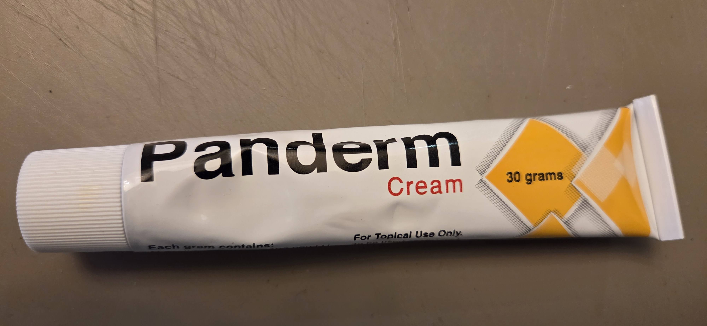 |
Panderm Cream | Пандерм Крем | Topical cream | Not fully visible (likely steroid/antifungal/antibiotic combo) | 30 g | Topical cream for skin conditions. For external use only. | Крем для наружного применения при кожных заболеваниях. Только для наружного использования. | Skin Treatment / Topical | Кожные заболевания / Наружное применение |
| 2 | 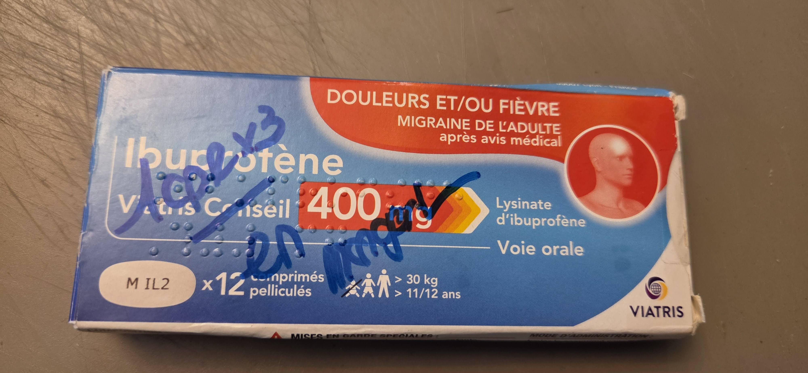 |
Ibuprofène Viatris Conseil | Ибупрофен Виатрис | Oral tablets | Ibuprofen lysinate | 400 mg × 12 tablets | Pain, fever, and adult migraine relief. Oral route. By Viatris. | Обезболивающее и жаропонижающее средство, применяется при мигрени у взрослых. Производитель: Viatris. | Analgesic / Antipyretic | Анальгетик / Жаропонижающее |
| 3 | 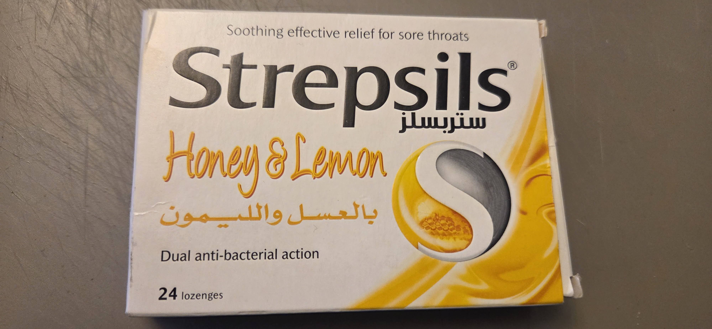 |
Strepsils Honey & Lemon | Стрепсилс Мёд и Лимон | Lozenges | Dual antibacterial agents | 24 lozenges | Soothing relief for sore throats; dual anti-bacterial action. | Леденцы для смягчения боли в горле с двойным антибактериальным действием. | Respiratory / ENT | Респираторные заболевания / ЛОР |
| 4 | 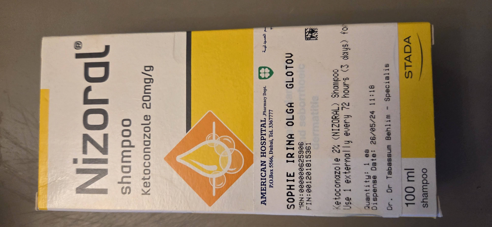 |
Nizoral Shampoo | Низорал Шампунь | Medicated shampoo | Ketoconazole 20 mg/g (2%) | 100 ml | Antifungal shampoo for dandruff and seborrhoeic dermatitis. Use every 72 hours. Dispensed by American Hospital Dubai. | Противогрибковый шампунь при перхоти и себорейном дерматите. Применять каждые 72 часа. | Antibiotic / Antifungal | Антибиотик / Противогрибковое |
| 5 | 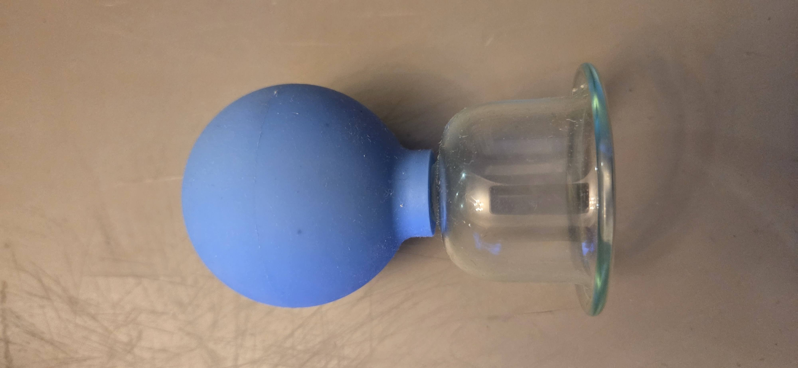 |
Glass Cupping Cup | Стеклянная Банка для Массажа | Medical device | N/A | Medium size | Traditional cupping therapy device with rubber bulb. Used in physiotherapy / alternative medicine. | Традиционная банка для массажа с резиновым баллоном. Применяется в физиотерапии и альтернативной медицине. | Medical Device / Accessory | Медицинское устройство / Аксессуар |
| 6 | 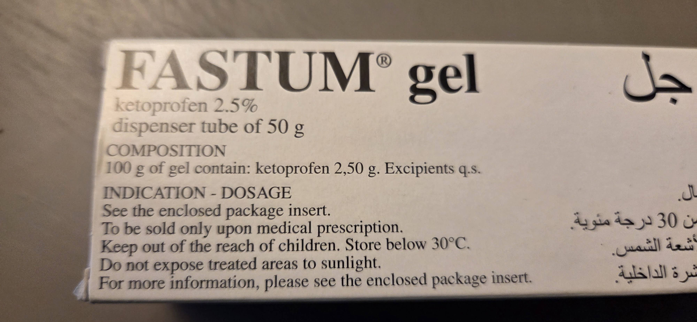 |
Fastum Gel | Фастум Гель | Topical gel | Ketoprofen 2.5% | 50 g dispenser tube | Anti-inflammatory gel for pain relief. Prescription only. Avoid sun exposure. Store below 30°C. | Противовоспалительный гель для снятия боли. Только по рецепту. Избегать воздействия солнечного света. Хранить при температуре ниже 30°C. | Anti-inflammatory / Topical | Противовоспалительное / Наружное |
| 7 | 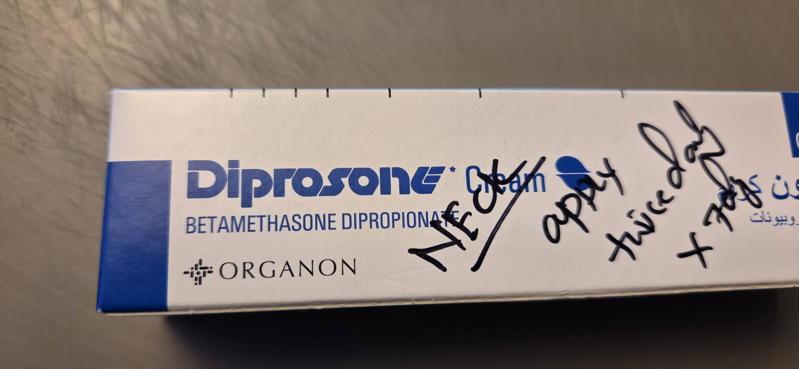 |
Diprosone Cream | Дипросон Крем | Topical cream | Betamethasone dipropionate | Not visible | Corticosteroid cream for inflammatory skin conditions. By Organon. Note: apply twice daily × 7 days. | Кортикостероидный крем при воспалительных заболеваниях кожи. Производитель: Organon. Применять дважды в день × 7 дней. | Skin Treatment / Topical | Кожные заболевания / Наружное применение |
| 8 | 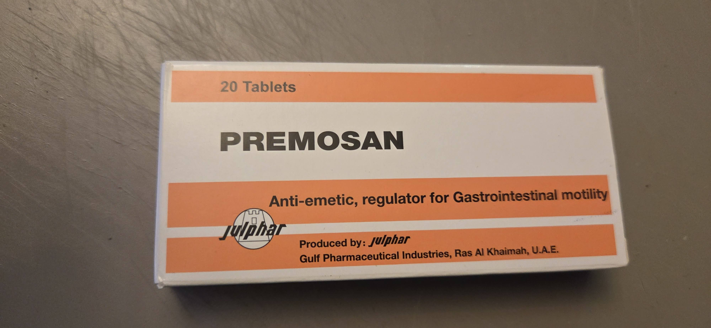 |
Premosan | Премосан | Oral tablets | Metoclopramide (likely) | 20 tablets | Anti-emetic and gastrointestinal motility regulator. By Julphar, UAE. | Противорвотное средство и регулятор моторики желудочно-кишечного тракта. Производитель: Julphar, ОАЭ. | GI / Digestive | ЖКТ / Пищеварение |
| 9 | 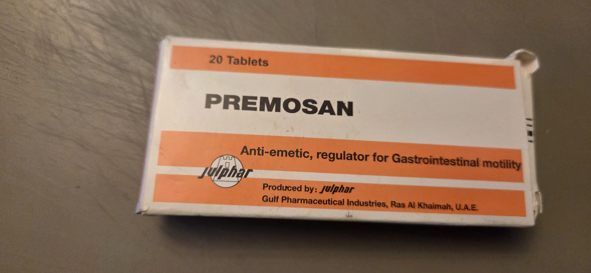 |
Premosan | Премосан | Oral tablets | Metoclopramide (likely) | 20 tablets | Same as #8 — different angle of same box. By Julphar, UAE. | То же, что №8 — другой ракурс той же упаковки. Производитель: Julphar, ОАЭ. | GI / Digestive | ЖКТ / Пищеварение |
| 10 | 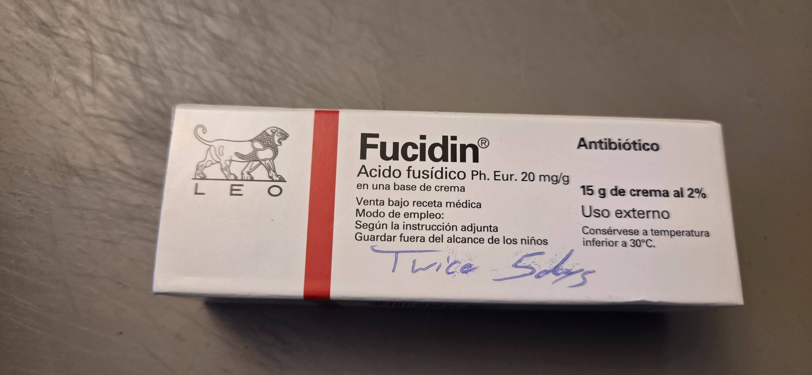 |
Fucidin Cream | Фуцидин Крем | Topical cream | Fusidic acid 20 mg/g | 15 g, 2% | Antibiotic cream for external use. Prescription required. By LEO Pharma. Note: apply twice × 5 days. | Антибиотический крем для наружного применения. Требуется рецепт. Производитель: LEO Pharma. Наносить дважды в день × 5 дней. | Antibiotic / Antifungal | Антибиотик / Противогрибковое |
| 11 | 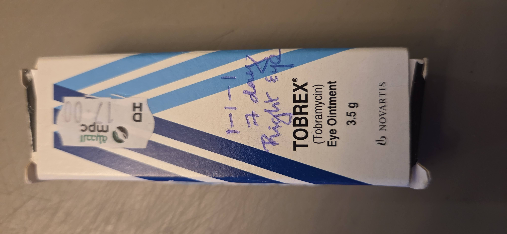 |
Tobrex Eye Ointment | Тобрекс Глазная Мазь | Ophthalmic ointment | Tobramycin | 3.5 g | Antibiotic eye ointment by Novartis. Note: 1-1-1, 7 days, right eye. | Антибиотическая глазная мазь. Производитель: Novartis. Применять 3 раза в день × 7 дней, правый глаз. | Antibiotic / Antifungal | Антибиотик / Противогрибковое |
| 12 | 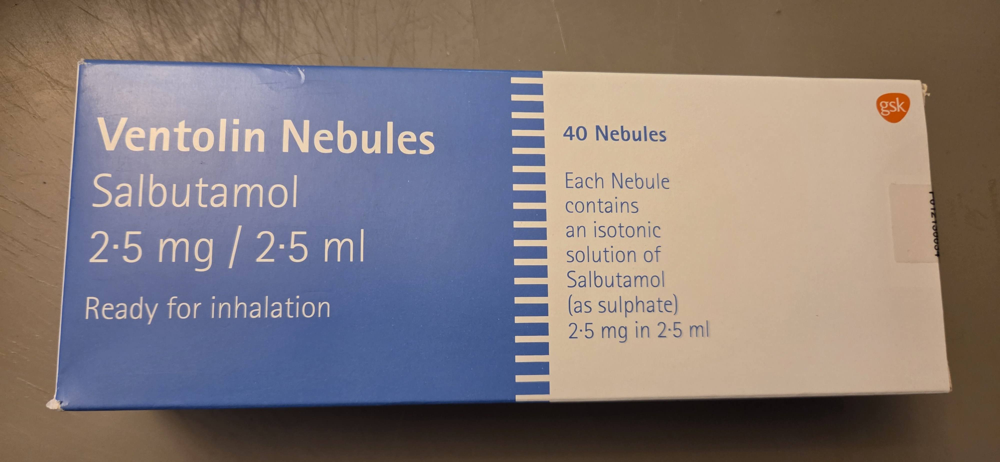 |
Ventolin Nebules | Вентолин Небулы | Inhalation solution | Salbutamol sulphate | 2.5 mg/2.5 ml × 40 nebules | Bronchodilator for nebuliser inhalation. For asthma and breathing difficulties. By GSK. | Бронходилататор для ингаляции через небулайзер. Применяется при астме и затруднённом дыхании. Производитель: GSK. | Respiratory / ENT | Респираторные заболевания / ЛОР |
| 13 | 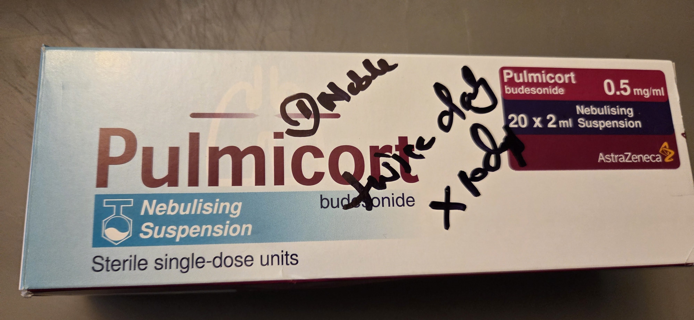 |
Pulmicort Nebulising Suspension | Пульмикорт Суспензия для Ингаляций | Inhalation suspension | Budesonide | 0.5 mg/ml, 20 × 2 ml | Inhaled corticosteroid for asthma management. By AstraZeneca. | Ингаляционный кортикостероид для лечения астмы. Производитель: AstraZeneca. | Respiratory / ENT | Респираторные заболевания / ЛОР |
| 14 | 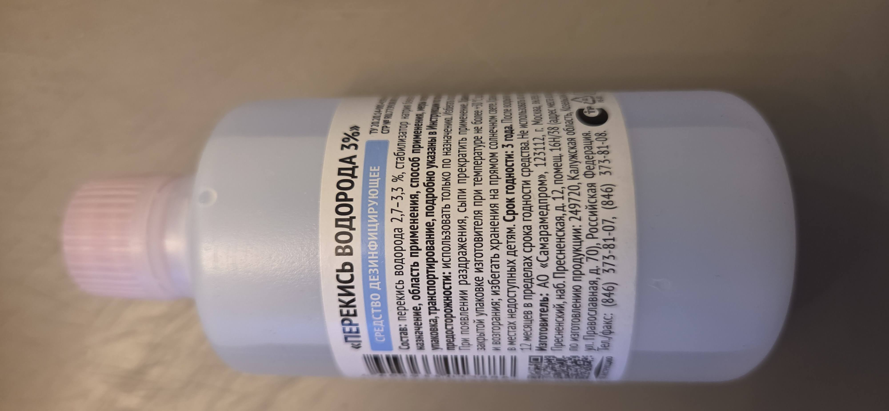 |
Hydrogen Peroxide 3% | Перекись Водорода 3% | Antiseptic solution | Hydrogen peroxide 2.7–3.3% | ~100 ml | Disinfecting agent for external use. Russian product by Samaramedprom. | Дезинфицирующее средство для наружного применения. Российский продукт, производитель: Самарамедпром. | Antiseptic / Disinfectant | Антисептик / Дезинфицирующее |
| 15 | 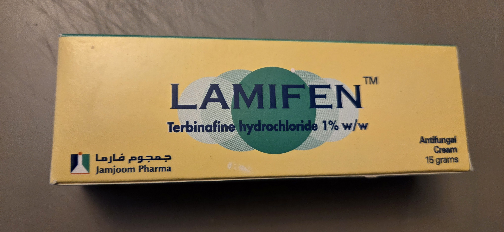 |
Lamifen | Ламифен | Topical antifungal cream | Terbinafine hydrochloride 1% w/w | 15 g | Antifungal cream for fungal skin infections. By Jamjoom Pharma. | Противогрибковый крем при грибковых инфекциях кожи. Производитель: Jamjoom Pharma. | Antibiotic / Antifungal | Антибиотик / Противогрибковое |
| 16 | 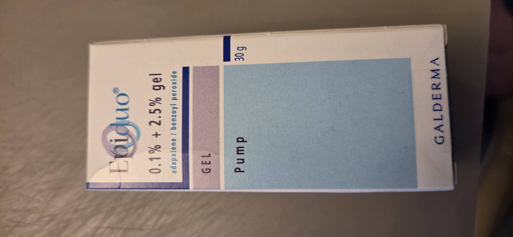 |
Epiduo Gel | Эпидуо Гель | Topical gel | Adapalene 0.1% + Benzoyl peroxide 2.5% | 30 g pump | Combination acne treatment gel by Galderma. | Комбинированный гель для лечения акне. Производитель: Galderma. | Skin Treatment / Topical | Кожные заболевания / Наружное применение |
| 17 | 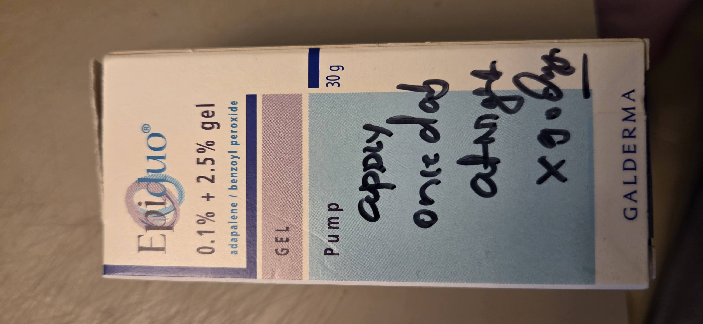 |
Epiduo Gel | Эпидуо Гель | Topical gel | Adapalene 0.1% + Benzoyl peroxide 2.5% | 30 g pump | Same as #16. Note: apply once daily at night × 90 days. | То же, что №16. Наносить один раз в день на ночь × 90 дней. | Skin Treatment / Topical | Кожные заболевания / Наружное применение |
| 18 | 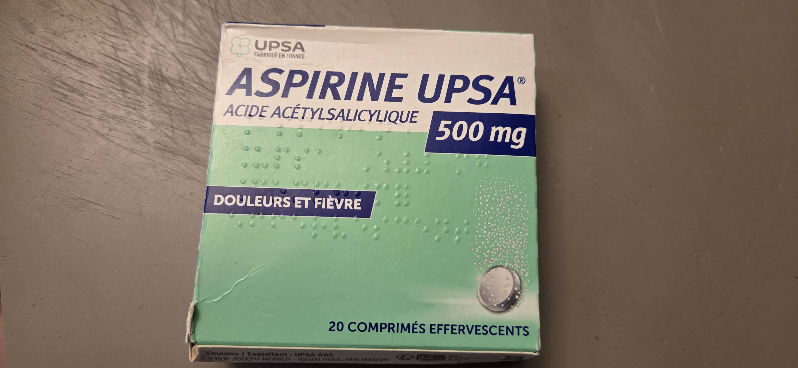 |
Aspirine UPSA | Аспирин УПСА | Effervescent tablets | Acetylsalicylic acid | 500 mg × 20 tablets | Pain and fever relief. Effervescent oral tablets. By UPSA, France. | Обезболивающее и жаропонижающее средство. Шипучие таблетки. Производитель: UPSA, Франция. | Analgesic / Antipyretic | Анальгетик / Жаропонижающее |
| 19 | 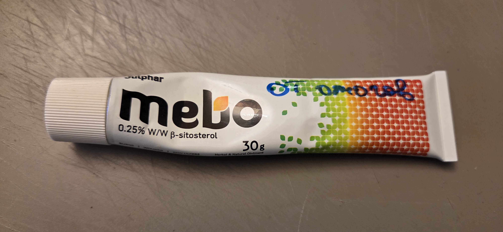 |
Mebo Ointment | Мебо Мазь | Herbal & natural ointment | β-sitosterol 0.25% w/w | 30 g tube | Herbal wound healing ointment by Julphar. For burns, wounds, skin ulcers. | Растительная мазь для заживления ран. Производитель: Julphar. Применяется при ожогах, ранах и язвах кожи. | Skin Treatment / Topical | Кожные заболевания / Наружное применение |
| 20 | 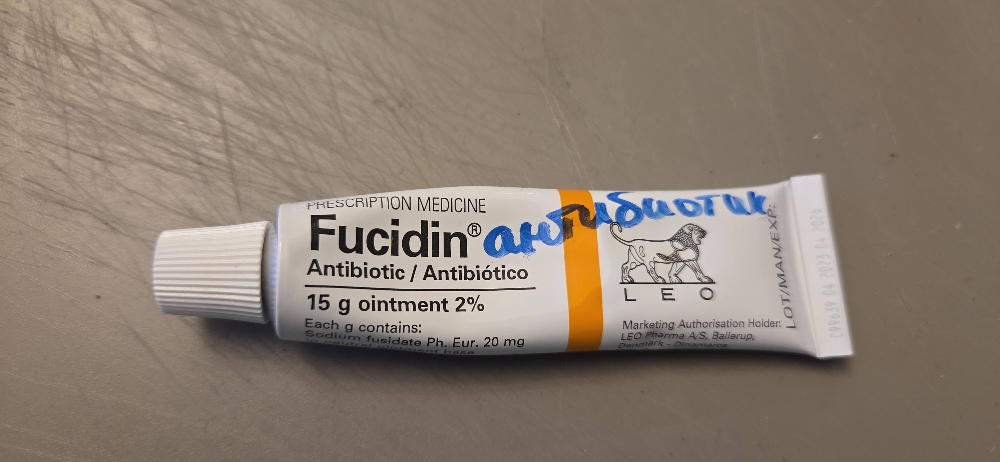 |
Fucidin Ointment | Фуцидин Мазь | Topical ointment | Sodium fusidate 20 mg/g | 15 g, 2% | Antibiotic ointment (prescription) by LEO Pharma. For bacterial skin infections. | Антибиотическая мазь (по рецепту). Производитель: LEO Pharma. При бактериальных инфекциях кожи. | Antibiotic / Antifungal | Антибиотик / Противогрибковое |
| 21 | 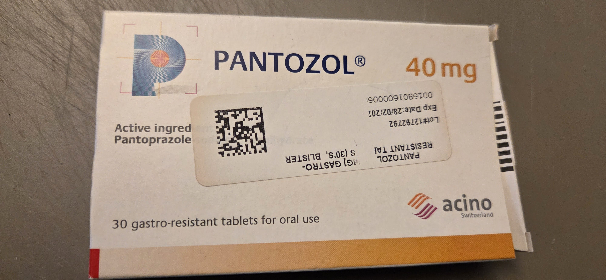 |
Pantozol | Пантозол | Gastro-resistant oral tablets | Pantoprazole | 40 mg × 30 tablets | Proton pump inhibitor for acid reflux, gastritis, and ulcers. By Acino Switzerland. Exp: 28/02/2027. | Ингибитор протонной помпы при кислотном рефлюксе, гастрите и язве. Производитель: Acino, Швейцария. | GI / Digestive | ЖКТ / Пищеварение |
| 22 | 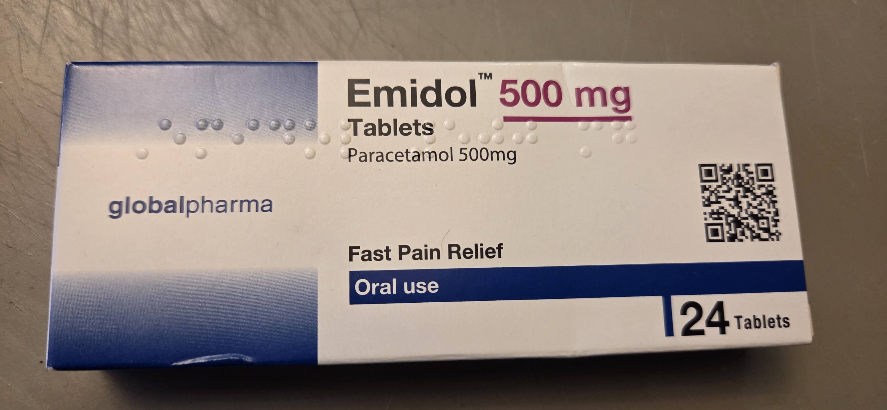 |
Emidol | Эмидол | Oral tablets | Paracetamol | 500 mg × 24 tablets | Fast pain relief analgesic. Oral use. By Globalpharma. | Быстродействующее обезболивающее средство. Для приёма внутрь. Производитель: Globalpharma. | Analgesic / Antipyretic | Анальгетик / Жаропонижающее |
| 23 | 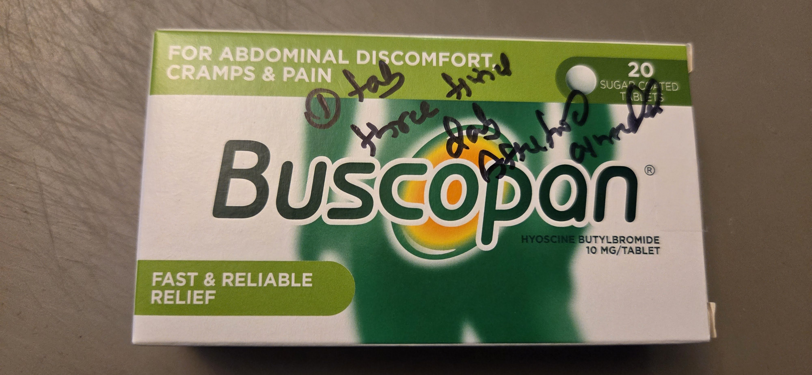 |
Buscopan | Бускопан | Sugar-coated tablets | Hyoscine butylbromide | 10 mg × 20 tablets | Antispasmodic for abdominal discomfort, cramps, and pain. Fast & reliable relief. | Спазмолитик при дискомфорте в животе, спазмах и боли. Быстрое и надёжное облегчение. | GI / Digestive | ЖКТ / Пищеварение |
| 24 | 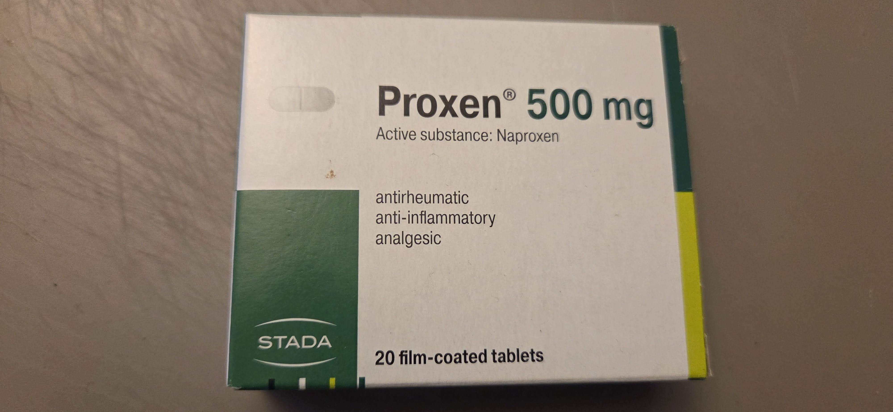 |
Proxen | Проксен | Film-coated oral tablets | Naproxen | 500 mg × 20 tablets | Anti-rheumatic, anti-inflammatory, and analgesic. By STADA. | Противоревматическое, противовоспалительное и обезболивающее средство. Производитель: STADA. | Analgesic / Antipyretic | Анальгетик / Жаропонижающее |
| 25 | 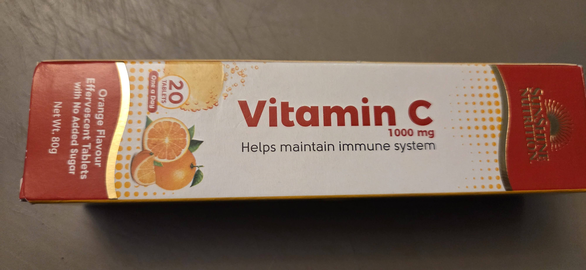 |
Vitamin C | Витамин С | Effervescent supplement tablets | Ascorbic acid | 1000 mg × 20 tablets | Immune system support. Orange flavour, no added sugar. Once daily. By Sunshine Nutrition. | Поддержка иммунной системы. Вкус апельсина, без добавления сахара. Один раз в день. Производитель: Sunshine Nutrition. | Supplement | Пищевая добавка |
| 26 | 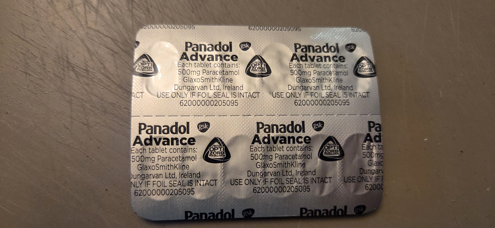 |
Panadol Advance | Панадол Адванс | Oral tablets | Paracetamol | 500 mg per tablet | Pain and fever relief. By GlaxoSmithKline, Ireland. | Обезболивающее и жаропонижающее средство. Производитель: GlaxoSmithKline, Ирландия. | Analgesic / Antipyretic | Анальгетик / Жаропонижающее |
| 27 | 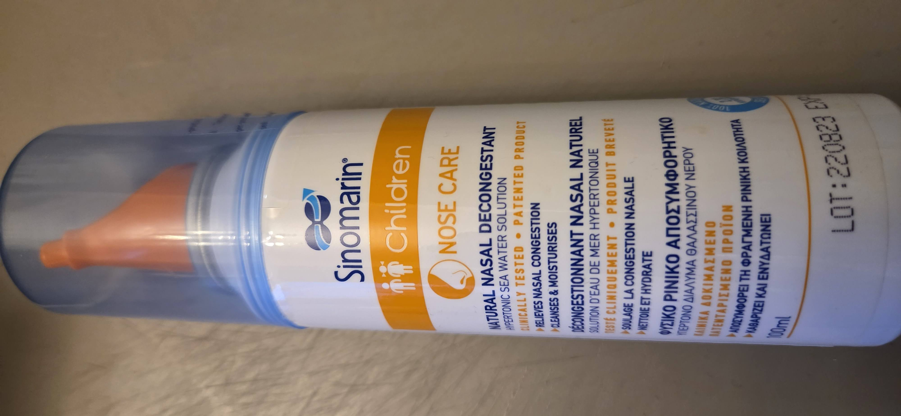 |
Sinomarin Children | Синомарин Детский | Nasal spray | Hypertonic sea water solution | 100 ml | Natural nasal decongestant for children. Relieves congestion, cleanses and moisturises. | Натуральный назальный деконгестант для детей. Снимает заложенность носа, очищает и увлажняет. | Respiratory / ENT | Респираторные заболевания / ЛОР |
| 28 | 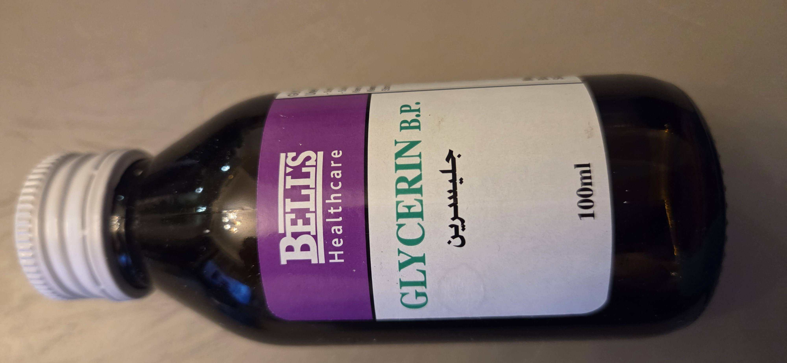 |
Glycerin B.P. | Глицерин Б.П. | Topical liquid | Glycerol (Glycerin) | 100 ml | Pharmaceutical-grade glycerin for skin moisturising and softening. By Bell's Healthcare. | Фармацевтический глицерин для увлажнения и смягчения кожи. Производитель: Bell's Healthcare. | Skin Treatment / Topical | Кожные заболевания / Наружное применение |
| 29 | 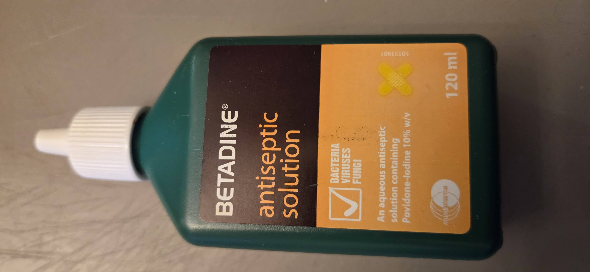 |
Betadine Solution | Бетадин Раствор | Topical antiseptic solution | Povidone-iodine 10% w/v | 120 ml bottle | Broad-spectrum antiseptic against bacteria, viruses, fungi. First aid use. By Mundipharma. | Широкоспектральный антисептик против бактерий, вирусов и грибков. Первая помощь. Производитель: Mundipharma. | Antiseptic / Disinfectant | Антисептик / Дезинфицирующее |
| 30 | 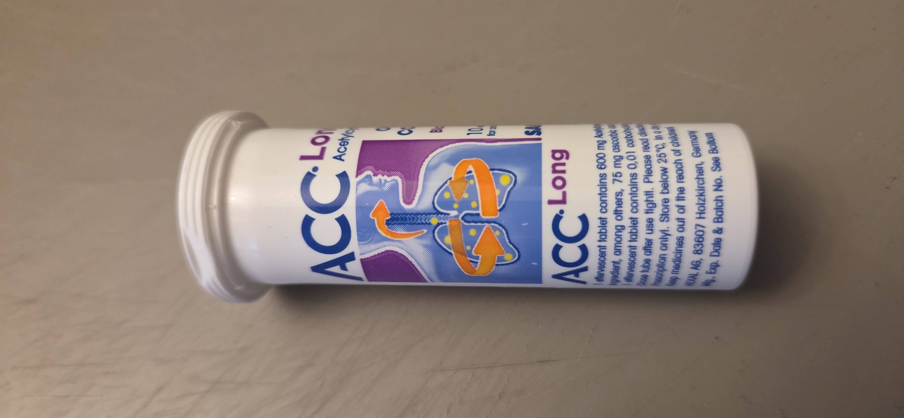 |
ACC Long | АЦЦ Лонг | Effervescent tablets | Acetylcysteine 600 mg + Ascorbic acid 75 mg | 10 tablets (tube) | Mucolytic/expectorant for chest congestion and cough. Prescription only. By Hexal AG, Germany. | Муколитическое/отхаркивающее средство при заложенности грудной клетки и кашле. По рецепту. Производитель: Hexal AG, Германия. | Respiratory / ENT | Респираторные заболевания / ЛОР |
| 31 | 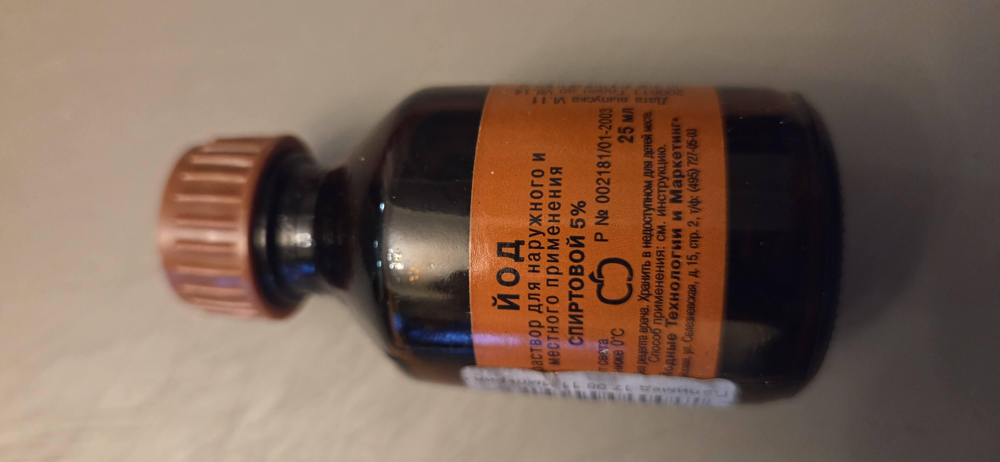 |
Iodine 5% Solution | Йод 5% Раствор | Antiseptic solution | Iodine 5% in alcohol | 25 ml | Alcoholic iodine solution for external antiseptic use. Russian product. Prescription required. | Спиртовой раствор йода для наружного антисептического применения. Российский продукт. Требуется рецепт. | Antiseptic / Disinfectant | Антисептик / Дезинфицирующее |
| 32 | 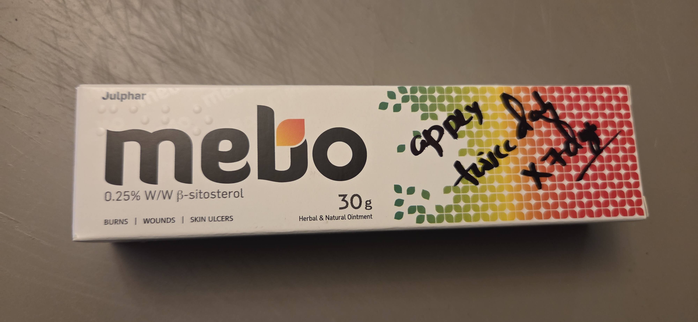 |
Mebo Ointment (box) | Мебо Мазь (коробка) | Herbal & natural ointment | β-sitosterol 0.25% w/w | 30 g box | Same as #19. Indications: burns, wounds, skin ulcers. By Julphar. Note: apply twice daily × 14 days. | То же, что №19. Показания: ожоги, раны, язвы кожи. Производитель: Julphar. Наносить дважды в день × 14 дней. | Skin Treatment / Topical | Кожные заболевания / Наружное применение |
| 33 | 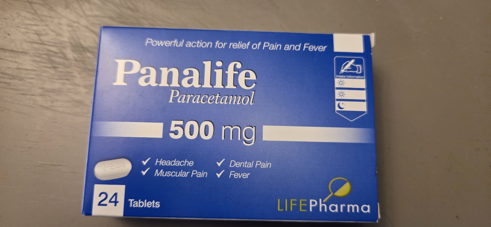 |
Panalife | Паналайф | Oral tablets | Paracetamol | 500 mg × 24 tablets | Pain and fever relief (headache, dental pain, muscular pain, fever). By LifePharma. | Обезболивающее и жаропонижающее (головная боль, зубная боль, мышечная боль, жар). Производитель: LifePharma. | Analgesic / Antipyretic | Анальгетик / Жаропонижающее |
| 34 | 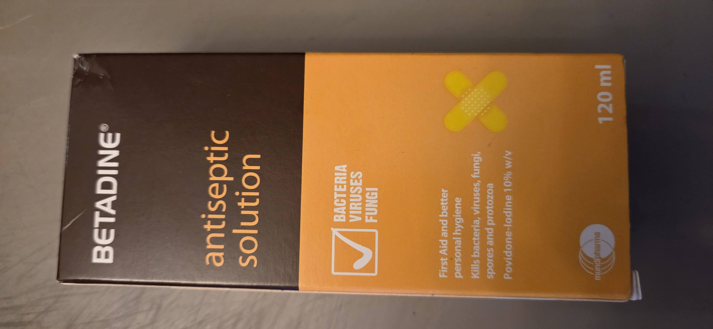 |
Betadine Solution (box) | Бетадин Раствор (коробка) | Topical antiseptic solution | Povidone-iodine 10% w/v | 120 ml box | Same as #29. Kills bacteria, viruses, fungi, spores and protozoa. By Mundipharma. | То же, что №29. Уничтожает бактерии, вирусы, грибки, споры и простейшие. Производитель: Mundipharma. | Antiseptic / Disinfectant | Антисептик / Дезинфицирующее |
| 35 | 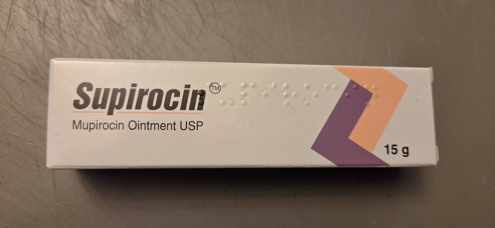 |
Supirocin | Супироцин | Topical ointment | Mupirocin USP | 15 g | Antibiotic ointment for bacterial skin infections (e.g., impetigo). | Антибиотическая мазь при бактериальных инфекциях кожи (например, импетиго). | Antibiotic / Antifungal | Антибиотик / Противогрибковое |
| 36 | 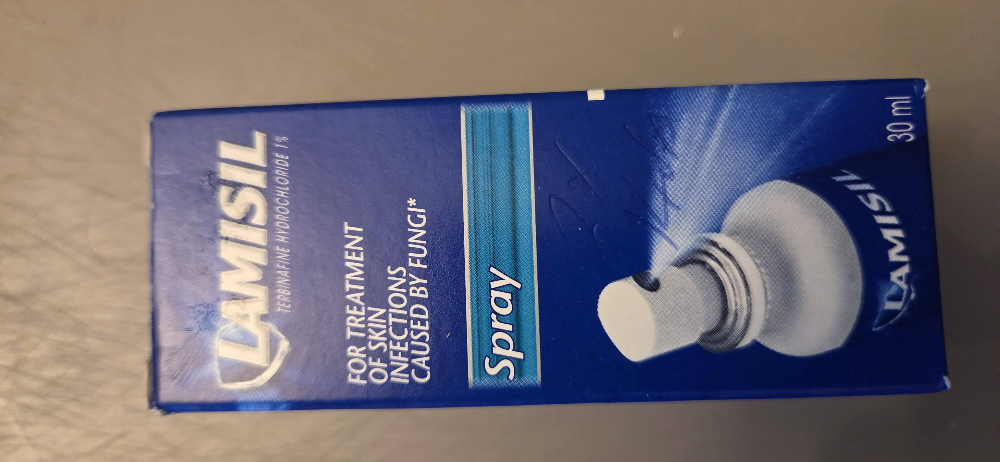 |
Lamisil Spray | Ламизил Спрей | Topical antifungal spray | Terbinafine hydrochloride 1% | 30 ml | For treatment of fungal skin infections (athlete's foot, ringworm, etc.). | Для лечения грибковых инфекций кожи (грибок стопы, лишай и др.). | Antibiotic / Antifungal | Антибиотик / Противогрибковое |
| 37 | 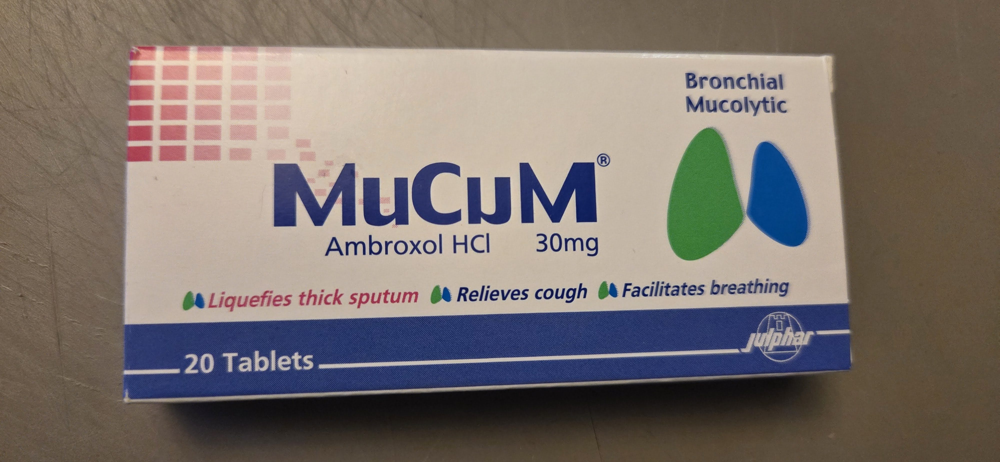 |
Mucum | Мукум | Oral tablets | Ambroxol HCl | 30 mg × 20 tablets | Bronchial mucolytic — liquefies thick sputum, relieves cough, facilitates breathing. By Julphar. | Бронхиальный муколитик — разжижает густую мокроту, облегчает кашель и дыхание. Производитель: Julphar. | Respiratory / ENT | Респираторные заболевания / ЛОР |
| 38 | 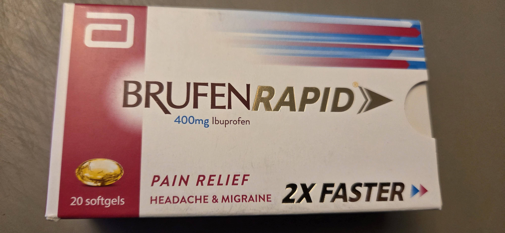 |
Brufen Rapid | Бруфен Рапид | Soft gel capsules | Ibuprofen | 400 mg × 20 softgels | Fast-acting pain relief for headache and migraine. Claims 2× faster absorption. | Быстродействующее обезболивающее при головной боли и мигрени. В 2 раза быстрее всасывается. | Analgesic / Antipyretic | Анальгетик / Жаропонижающее |
| 39 | 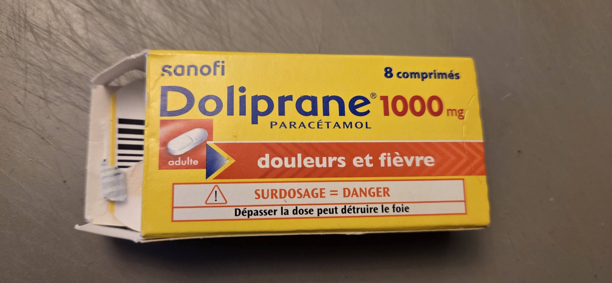 |
Doliprane 1000 mg (tablets) | Долипран 1000 мг (таблетки) | Oral tablets | Paracetamol | 1000 mg × 8 tablets | Adult pain and fever relief. Warning: overdose is dangerous and may destroy the liver. By Sanofi. | Обезболивающее и жаропонижающее для взрослых. Внимание: передозировка опасна и может вызвать поражение печени. Производитель: Sanofi. | Analgesic / Antipyretic | Анальгетик / Жаропонижающее |
| 40 | 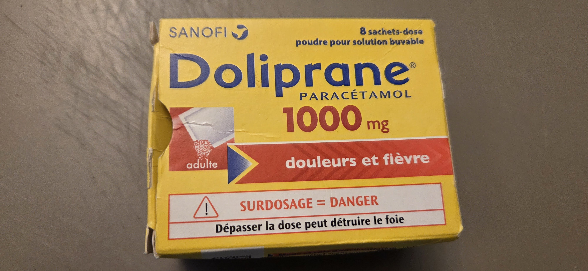 |
Doliprane 1000 mg (sachets) | Долипран 1000 мг (саше) | Oral powder sachets | Paracetamol | 1000 mg × 8 sachets | Same as #39 in powder-for-oral-solution sachet form for adults. By Sanofi. | То же, что №39, в форме порошка для приготовления раствора для взрослых. Производитель: Sanofi. | Analgesic / Antipyretic | Анальгетик / Жаропонижающее |
| 41 | 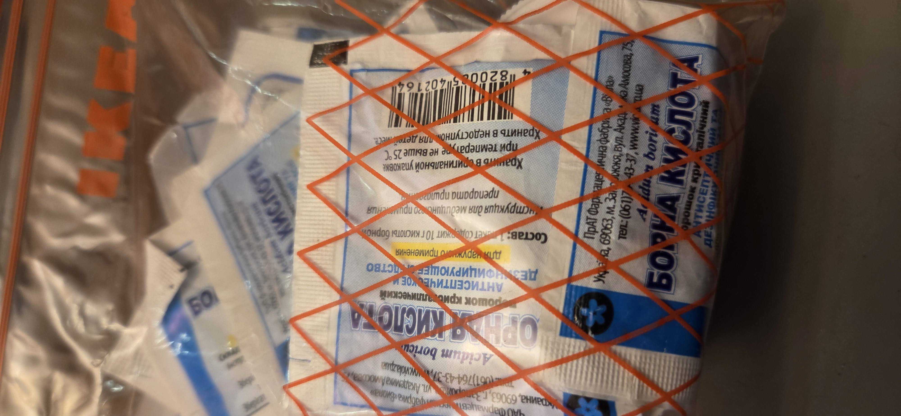 |
Boric Acid | Борная Кислота | Antiseptic powder | Acidum boricum (Boric acid) | Sachets of 10 g | Crystalline antiseptic and disinfecting powder for external/topical use. Ukrainian product by Viola Pharma, Zaporizhzhia. Store below 25°C. | Кристаллический антисептический и дезинфицирующий порошок для наружного применения. Украинский продукт, производитель: Вiола, Запорожье. Хранить при температуре ниже 25°C. | Antiseptic / Disinfectant | Антисептик / Дезинфицирующее |
| 42 | 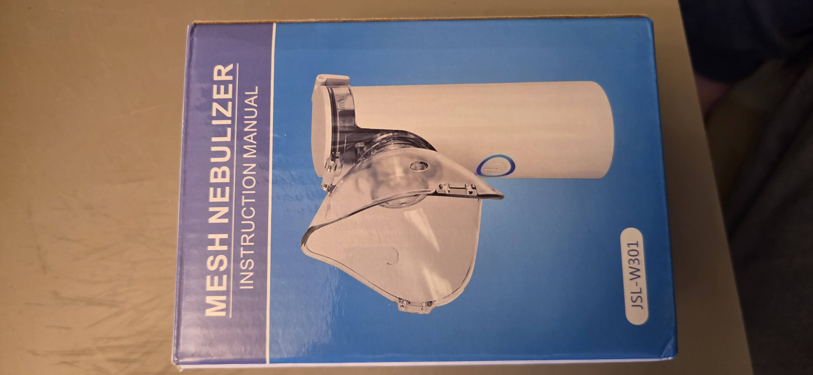 |
Mesh Nebulizer JSL-W301 | Меш Небулайзер JSL-W301 | Medical device | N/A | Portable handheld unit | Portable mesh nebulizer for inhalation of liquid medications. For asthma and respiratory conditions. Includes face mask. | Портативный меш-небулайзер для ингаляции жидких лекарств. Применяется при астме и заболеваниях дыхательных путей. В комплекте маска. | Medical Device / Accessory | Медицинское устройство / Аксессуар |
| 43 | 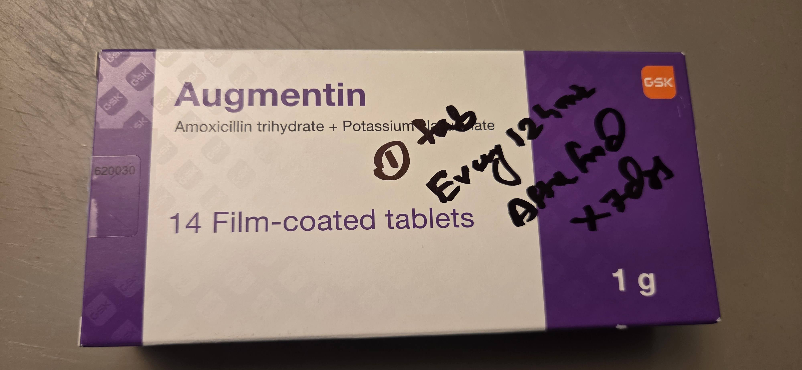 |
Augmentin | Аугментин | Film-coated oral tablets | Amoxicillin trihydrate + Potassium clavulanate | 1 g × 14 tablets | Broad-spectrum antibiotic for bacterial infections. By GSK. Prescription only. Note: 1 tablet every 12 hours × 7 days. | Антибиотик широкого спектра действия при бактериальных инфекциях. Производитель: GSK. По рецепту. 1 таблетка каждые 12 часов × 7 дней. | Antibiotic / Antifungal | Антибиотик / Противогрибковое |
| 44 | 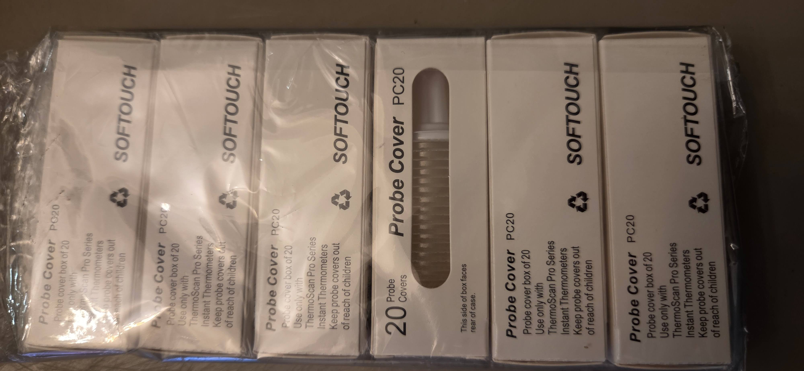 |
Softouch Probe Covers PC20 | Зонды-Колпачки Softouch PC20 | Medical device consumable | N/A | Multiple boxes × 20 covers each | Disposable probe covers for ThermoScan Pro Series ear thermometers. Single-use hygiene accessory. | Одноразовые колпачки для ушных термометров серии ThermoScan Pro. Гигиенический аксессуар одноразового использования. | Medical Device / Accessory | Медицинское устройство / Аксессуар |
| 45 | 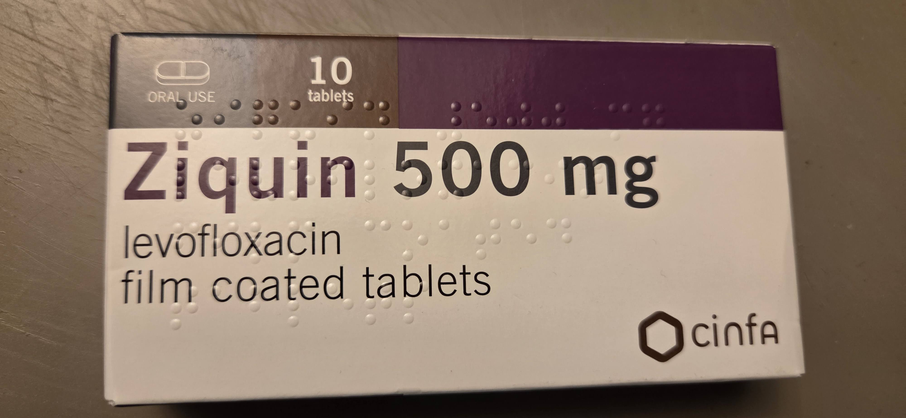 |
Ziquin | Зиквин | Film-coated oral tablets | Levofloxacin | 500 mg × 10 tablets | Fluoroquinolone antibiotic for bacterial infections (respiratory, urinary tract, skin). By Cinfa. Prescription only. | Антибиотик-фторхинолон при бактериальных инфекциях (дыхательных путей, мочевыводящих путей, кожи). Производитель: Cinfa. По рецепту. | Antibiotic / Antifungal | Антибиотик / Противогрибковое |